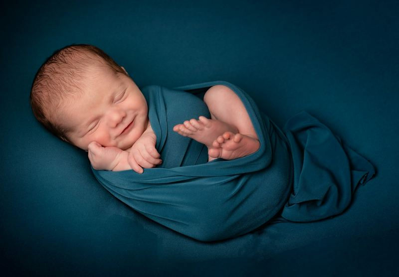
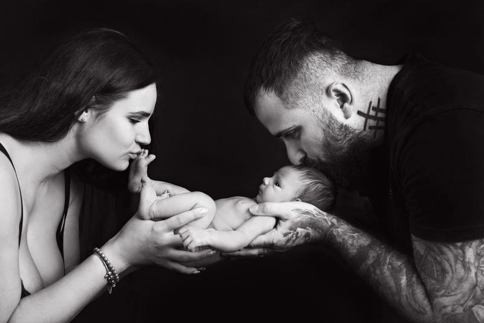
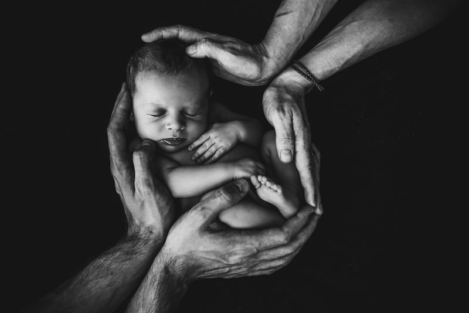
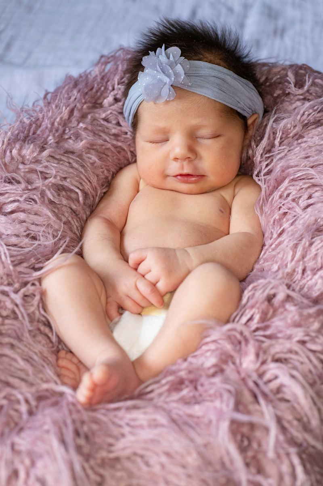
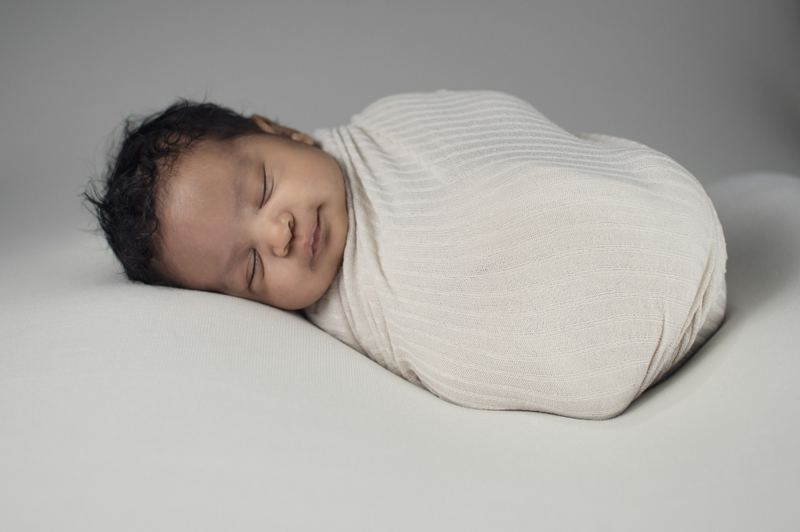

Novorozenci
Miminko v prvních dnech, kdy nejvíc spí. V klidu, v teple a bez spěchu.
Lucie Kotrysová, fotografka z Havířova. Fotím novorozence, těhotná bříška a rodiny, v klidu a bez spěchu, aby to bylo hezké pro Vás i pro miminko.

Zadejte termín porodu. Spočítám, kdy se nejlépe hodí těhotenské focení a kdy novorozenecké.
Novorozence je dobré rezervovat už v těhotenství. Termín pak jen posuneme podle toho, kdy se miminko narodí.
Rezervovat obě focení
Miminko v prvních dnech, kdy nejvíc spí. V klidu, v teple a bez spěchu.
Bříško, které už se nedá přehlédnout. Sama, s partnerem nebo se staršími sourozenci.

Celá rodina pohromadě. Fotky, které si za dvacet let rádi prohlédnete.



„Nádherné fotky, paní byla pohodová a měla to tam moc pěkné. Doporučuji všem.“
maminka na Firmy.cz